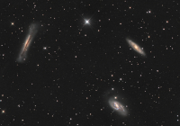

Que ce soit à l'oeil nu, avec une paire de jumelles, un instrument d'astronomie ou en photographie, il y a
différentes
façons d'apprécier les beautés de la voûte céleste.
Alors sans hésiter lancez-vous dans cette passionnante aventure qu'est l'observation du ciel nocturne !
Notre système
solaire regorge
d'objets à
photographier!

ciel profond
tutoriels

ephemerides